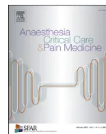

Hervé Bouaziza,*, Paul J. Zetlaouib, Sébastien Pierrec, Eric Desruennesd, Nicolas Fritsche, Denis Jochumf, Frédéric Lapostolleg, Thierry Pirotteh, Stéphane Villiersi
a Department of Anaesthesia and Intensive Care, Hôpital Central, 29, avenue du Maréchal-de-Lattre-de-Tassigny, 54035 Nancy cedex, France
b Department of Anaesthesia and Intensive Care, Hôpital de Bicêtre, 78, Rue du Général-Leclerc, 94275 Le Kremlin-Bicêtre, France
c Department of Anaesthesia, Institut Universitaire du Cancer Toulouse–Oncopole, 31059 Toulouse, France
d Department of Anaesthesia, Institut Gustave-Roussy, 94805 Villejuif, France
e Department of Anaesthesia and Intensive Care, Hôpital d'Instruction des Armées Robert-Picqué, 33140 Villenave d'Ornon, France
f Department of Anaesthesia and Intensive Care, Groupe Hospitalier du Centre Alsace (GHCA), Hôpital Albert-Schweitzer, 68003 Colmar, France
g Samu 93 – UF Research-Teaching-Quality, Université Paris 13, Sorbonne Paris Cité, EA 3509, Hôpital Avicenne, 93009 Bobigny, France
h Department of Anaesthesia, Cliniques universitaires Saint-Luc, Université Catholique de Louvain, 1348 Bruxelles, Belgium
i Department of Anaesthesia and Intensive Care, Hôpital Saint-Louis, 1, avenue Claude-Vellefaux, 75010 Paris cedex 10, France
Insertion of vascular access is a common procedure with potential for iatrogenic events, some of which can be serious. The spread of ultrasound scanners in operating rooms, intensive care units and emergency departments has made ultrasound-guided catheterisation possible. The first guidelines were published a decade ago but are not always followed in France. The French Society of Anaesthesia and Intensive Care has decided to adopt a position on this issue through its Guidelines Committee in order to propose a limited number of simple guidelines. The method used was the GRADE® method using the most recently published meta-analyses as the source of references. The level of evidence found ranged from low to high and all the positive aspects associated with ultrasound guidance, i.e. fewer traumatic complications at puncture, probably or definitely outweigh the potential adverse consequences regardless of whether an adult or child is involved and regardless of the site of insertion.
© 2015 Société française d'anesthésie et de réanimation (Sfar). Published by Elsevier Masson SAS. All rights reserved.
Paul Zetlaoui, Hervé Bouaziz, Sébastien Pierre.
Working group: Eric Desruennes, Nicolas Fritsch, Denis Jochum, Frédéric Lapostolle, Thierry Pirotte, Stéphane Villiers.
Document validated by the Sfar [French Society of Anaesthesia and Intensive Care] board on Friday 12 September 2014.
Insertion of a central venous access, whether it is being used for a short or a long period of time, is a common procedure, which is often undertaken by intensivists and anaesthetists. The associated
morbidities include punctured arteries for almost 10% of cases and haemothorax or pneumothorax for about 3% [1]. These complications can be serious or even fatal [2]. Although insertion of radial arterial and peripheral venous accesses is not associated with the same iatrogenic risks, it can cause pain and discomfort, delay care and, in the event of failure, deprive the patient of the best possible chances.
The first guidelines from the National Institute for Clinical Excellence [3] to recommend the systematic use of ultrasound guidance for puncture when inserting central venous access appeared in 2002, but only 25% of anaesthetists in the English-speaking world seem to follow them [4]. Recently, American and international guidelines were published [5,6]. Although the former recommend a different method to that recommended by the French Society of Anaesthesia and Intensive Care (Société française d'anesthésie et de réanimation [Sfar]), the latter – although comprehensive – do not provide explicit, transparent justifications for their proposed guidelines. In addition, one of the main obstacles
* Corresponding author.
E-mail address: h.bouaziz@chu-nancy.fr (H. Bouaziz).
to practitioners accepting international guidelines is unfamiliarity with the latter and inability to understand texts written in a foreign language [7]. For that reason the Board of the French Society of Anaesthesia and Intensive Care has decided to take a position on the subject by convening the Clinical Guidelines Committee to compile a limited set of simple guidelines in French accessible to all practitioners.
The aim of these guidelines is to issue recommendations on the use of ultrasound guidance for inserting venous and arterial access, whether it is being used for a short- or a long-term duration in both adults and children. Pre-procedural ultrasound assessment only used to mark the skin for subsequent cannulation and Doppler ultrasonography are not addressed because these techniques are less efficient [6].
Meta-analyses by Wu et al. [1], Gu et al. [8] and Liu et al. [9] were used as the source of references. Only randomized, controlled trials with a Jadad score [10] of at least 2 were included. The studies by Bobbia et al. [11], Hansen et al. [12], Iwashima et al. [13] and Eldabaa et al. [14] were added to complete the analysis. No relevant published work addressing patients' values and preferences in relation to the subject of these expert guidelines was found. The question of using ultrasound guidance for the femoral artery in adults and children was not addressed because of the absence of any published material.
The populations of adults and children were studied separately, comparing the technique of ultrasound-guided catheterization with either anatomical cutaneous landmark-based cannulation or palpation (depending on the insertion site: Internal Jugular Vein, Subclavian Vein, Femoral Vein, Radial Artery and peripheral veins in which insertion is deemed difficult).
For central vascular access, the main criteria selected by the experts were: failed puncture, arterial puncture, pneumothorax and haemothorax, as applicable. For other types of vascular access, only success rate was considered. Insertion time was not studied since widely disparate definitions are used. Risk reduction and heterogeneity calculations were redone using Revman® software and evidence profiles were compiled using GRADEpro® software (see Further Materials).
The medico-economic analysis was carried out by Calvert et al. [15] in 2003 for the National Health Service by analytical decision modelling. The marginal cost of ultrasound guidance for inserting a central venous access is less than 12 €. The scenario is based on a rate of at least 15 procedures a week. The economic analysis shows a saving of over 2000 € per 1000 procedures, based on purchasing and maintenance costs, resources consumed, single-use devices and training costs. However, these results are highly dependent on the number of procedures performed.
For most of the vascular approaches investigated, the guidelines below show that ultrasound guidance is superior to traditional anatomical cutaneous landmark-based cannulation techniques. The experts are aware that, in all establishments where vascular approaches (central, peripheral and arterial) are carried out, the availability of ultrasound equipment is still restricted. The experts are also aware that practitioners involved in performing such
procedures are not all fully trained in the techniques of ultrasound-guided puncture. This is why these expert guidelines are expected to serve as a foundation for establishing a training programme and to provide a framework for the acquisition of suitable equipment (ultrasound scanners and accessories).
The working method used to compile these guidelines was the GRADE® method. After a quantitative analysis of the literature, this method determines evidence levels separately and therefore assesses the confidence that can be placed in the quantitative analysis and a level of recommendation. The quality of evidence is graded into four levels:
The level of evidence is analysed for each criteria and then a global level of evidence is defined on the basis of the various evidence levels for the main criteria.
The final formulation of guidelines is always binary, i.e. either positive or negative and either strong or weak:
The strength of the guideline is determined on the basis of four key factors and validated by the experts after a vote, using the GRADE Grid method [16]:
To insert a central venous access via the internal jugular vein in an adult, should ultrasound-guided puncture or anatomical cutaneous landmark-based cannulation be used?
The results of the meta-analysis demonstrated an 86% reduction in the rate of catheterisation failure (RR: 0.14; 95%CI: 0.09–0.23) in 13 randomised, controlled trials including
2653 patients, an 80% reduction in arterial puncture rates (RR: 0.20; 95%CI: 0.13–0.32) in 13 randomised, controlled trials including 2675 patients, a 78% reduction in the number of haematomas (RR: 0.22; 95%CI: 0.14–0.36) in 9 randomised, controlled trials including 2309 patients, a 90% reduction in the number of cases of pneumothorax (RR: 0.1; 95%CI: 0.02–0.56) in 3 randomised, controlled trials including 1110 patients, a 94% reduction in the number of cases of haemothorax (RR: 0.06; 95%CI: 0–1) in one randomised, controlled trial including 900 patients. The overall level of evidence is good and the risk-to-benefit and the cost-to-benefit ratios are positive.
In all, positive aspects clearly outweigh negative aspects and we propose a strong recommendation.
It is recommended that ultrasound-guided puncture be used rather than anatomical cutaneous landmark-based cannulation to insert venous access catheters the internal jugular vein in adults (level 1+).
To insert central venous access via the subclavian vein in an adult, should ultrasound-guided puncture or anatomical cutaneous landmark-based cannulation be used?
The results of the meta-analysis demonstrated a 94% reduction in the rate of catheterization failure (RR: 0.06; 95%CI: 0.01–0.2) in 3 randomised, controlled trials including 498 patients, an 85% reduction in arterial puncture rates (RR: 0.18; 95%CI: 0.04–0.65) in 3 randomized, controlled trials including 498 patients, a 77% reduction in the number of haematomas (RR: 0.23; 95%CI: 0.09–0.68) in 3 randomized, controlled trials including 498 patients, a 78% reduction in the number of cases of pneumothorax (RR: 0.22; 95%CI: 0.05–0.92) in 2 randomized, controlled trials including 446 patients, a 95% reduction in the number of cases of haemothorax (RR: 0.05; 95%CI: 0–0.88) in one randomized, controlled trial including 401 patients. Few studies focus on this approach but the overall level of evidence is high despite heterogeneity and lack of precision in the results for certain key criteria. The risk-to-benefit and the cost-to-benefit ratios are positive.
In all, positive aspects clearly outweigh negative aspects and we propose a strong recommendation.
It is recommended that ultrasound-guided puncture be used rather than anatomical cutaneous landmark-based cannulation to insert venous access via the subclavian vein in adults (level 1+).
To insert a central venous access via the femoral vein in adults, should ultrasound-guided puncture or anatomical cutaneous landmark-based cannulation be used?
The results of the meta-analysis demonstrated an 85% reduction in the rate of catheterisation failure (RR: 0.15; 95%CI:
0.04–0.52) in 2 randomised, controlled trials including 150 patients, an 86% reduction in arterial puncture rates (RR: 0.14; 95%CI: 0.02–0.74) in 2 randomised, controlled trials including 150 patients and a possible 50% reduction in the number of cases of haemothorax (RR: 0.50; 95%CI: 0.09–2.43) in one randomised, controlled trial including 110 patients. Although there are not many studies on this approach and the overall level of evidence is only moderate because of a lack of precision in the results, the risk-to-benefit and the cost-to-benefit ratios are positive.
In all, positive aspects clearly outweigh negative aspects and we propose a strong recommendation.
To insert a central venous access via the femoral vein in adults, ultrasound-guided puncture should be used rather than anatomical cutaneous landmark-based cannulation (level 1+).
To insert a radial arterial catheter in adults, should ultrasound-guided puncture or anatomical cutaneous landmark-based cannulation be used?
The results of the meta-analysis demonstrated a 39% reduction in the rate of catheterisation failure at the first attempt (RR: 0.61; 95%CI: 0.41–0.84) in 4 randomised, controlled trials including 281 patients, an 83% reduction in the number of haematomas (RR: 0.17; 95%CI: 0.05–0.54) in 2 randomised, controlled trials including 132 patients. The overall success rate is not reported. Few studies focus on this approach route and the overall level of evidence is low because of the heterogeneity and lack of precision of the results for the critical end point selected. The risk-to-benefit and the cost-to-benefit ratios are probably positive.
In all, positive aspects probably outweigh negative aspects and we propose a weak recommendation.
It is probably recommended that ultrasound-guided puncture should be used rather than anatomical cutaneous landmark-based cannulation to insert a radial arterial catheter in adults (level 2+).
When difficult access for peripheral venous access is anticipated in adults, should ultrasound-guided puncture rather than anatomical cutaneous landmark-based cannulation (or palpation) be used?
The results of the meta-analysis demonstrated a 20% increase in the rate of successful catheterisation (RR: 1.20; 95%CI: 0.99–1.33) in 3 randomised, controlled trials including 154 patients. Although there are not many studies on this approach and the overall level of evidence is only moderate because of lack of precision in the results, the risk-to-benefit and the cost-to-benefit ratios are probably positive.
In all, positive aspects probably outweigh negative aspects and we propose a weak recommendation.
It is probably recommended that ultrasound-guided puncture should be used rather than anatomical cutaneous landmark-based cannulation when difficult access for peripheral venous access is anticipated in adults (level 2+).
To insert central venous access via the internal jugular vein in children, should ultrasound-guided puncture or anatomical cutaneous landmark-based cannulation be used?
The results of the meta-analysis demonstrated a 69% reduction in the rate of catheterisation failure (RR: 0.31; 95%CI: 0.18–0.52) in 4 randomised, controlled trials including 460 patients, a 77% reduction in arterial puncture rates (RR: 0.23; 95%CI: 0.11–0.44) in 4 randomised, controlled trials including 460 patients. The overall level of evidence is moderate because of the heterogeneity of the results; the risk-to-benefit and the cost-to-benefit ratios are positive.
In all, positive aspects clearly outweigh the negative aspects and we propose a strong recommendation.
To insert central venous access via the internal jugular vein in children, ultrasound-guided puncture should be used rather than anatomical cutaneous landmark-based cannulation (level 1+).
To insert central venous access via the subclavian vein in children, should ultrasound-guided puncture or anatomical cutaneous landmark-based cannulation be used?
No randomised controlled study on the use of ultrasound-guided puncture compared to an anatomical cutaneous landmark-based technique is available on the reduction in complications during insertion of central venous access via the subclavian vein in children.
The authors point out that feasibility studies have been carried out in children focusing on access via the subclavian vein or its extension, the brachiocephalic vein. Infra- or supra-clavicular approaches have been addressed in 7 articles. No complications (arterial puncture or pneumothorax) were reported in any of these studies, which included more than 400 babies and children. Nevertheless, further expert analysis and controlled studies need to be performed.
No guideline can be formulated.
To insert central venous access via the femoral vein in children, should ultrasound-guided puncture or anatomical cutaneous landmark-based cannulation be used?
The results of the meta-analysis demonstrated a 62% reduction in the rate of catheterisation failure (RR: 0.38; 95%CI: 0.19–0.73) and a 65% reduction in arterial puncture rates (RR: 0.35; 95%CI: 0.14–0.83) in 3 randomised, controlled trials including 215 patients. The overall level of evidence is moderate because of a risk of bias and lack of precision in the results; the risk-to-benefit and the cost-to-benefit ratios are positive.
In all, positive aspects clearly outweigh negative aspects and we propose a strong recommendation.
To insert a central venous access via the femoral vein in children, ultrasound-guided puncture should be used rather than anatomical cutaneous landmark-based cannulation (level 1+).
To insert a radial arterial catheter in children, should ultrasound-guided puncture or anatomical cutaneous landmark-based cannulation be used?
The results of the meta-analysis demonstrated a 33% reduction in the rate of catheterisation failure at the first attempt (RR: 0.67; 95%CI: 0.45–0.91) in 3 randomised, controlled trials including 300 patients and an 80% reduction in the number of haematomas (RR: 0.2; 95%CI: 0.05–0.65) in one randomised, controlled trial including 118 patients. The overall success rate is not reported. Although there are not many studies on this approach and the overall level of evidence is moderate because of heterogeneous results, the risk-to-benefit and the cost-to-benefit ratios are probably positive.
In all, positive aspects probably outweigh negative aspects and we propose a weak recommendation.
It is probably recommended that ultrasound-guided puncture should be used rather than anatomical cutaneous landmark-based cannulation to insert a radial arterial catheter in children (level 2+).
When difficult access for peripheral venous access is anticipated in children, should ultrasound-guided puncture rather than anatomical cutaneous landmark-based cannulation (or palpation) be used?
The results of the meta-analysis probably demonstrated a 20% increase in the rate of successful catheterisation (RR: 1.20; 95%CI: 0.89–1.43) in 3 randomised, controlled trials including 134 patients. Few studies focus on this approach and the overall level of evidence is low because of the lack of precision of the results. The risk-to-benefit and the cost-to-benefit ratios are probably positive.
In all, positive aspects probably outweigh negative aspects and we propose a weak recommendation.
It is probably recommended that ultrasound-guided puncture should be used rather than anatomical cutaneous landmark-based cannulation when difficult access for peripheral venous access is anticipated in children (level 2+).
Nicolas Fritsch, Frédéric Lapostolle, Sébastien Pierre, Thierry Pirotte and Stéphane Villiers declare that they have no conflicts of interest concerning this article.
Hervé Bouaziz declares having received in the past payments for expert advice from the following companies: B/Braun®, Gamida®, General Electric® and Sonosite®.
Eric Desruennes declares having received in the past payments for expert advice from the following companies: B/Braun® and Perouse®.
Denis Jochum declares having received in the past payments for expert advice from the following companies: B/Braun®, Gamida® and Sonosite®.
Paul Zetlaoui declares having received in the past payments for expert advice from the following companies: BK Medical®, General Electric®, Mindray®, and Sonosite®.
Supplementary data associated with this article can be found, in the online version, at doi:10.1016/j.accpm.2015.01.004.
[1] Wu S-Y, Ling Q, Cao LH, Wang J, Xu MX, Zeng WA. Real-time two-dimensional ultrasound guidance for central venous cannulation: a meta-analysis. Anesthesiology 2013;118:361–75.
[2] Reuber M, Dunkley LA, Turton EPL, Bell MDD, Bamford JM. Stroke after internal jugular venous cannulation. Acta Neurol Scand 2002;105:235–9.
[3] NICE. Guidance on the use of ultrasound locating devices for placing central venous catheters; 2002, https://www.nice.org.uk/guidance/TA49.
[4] McGrattan T, Duffy J, Green JS, O'Donnell N. A survey of the use of ultrasound guidance in internal jugular venous cannulation. Anaesthesia 2008;63:1222–5.
[5] Rupp SM, Apfelbaum JL, Blitt C, et al. Practice guidelines for central venous access: a report by the American Society of Anesthesiologists Task Force on Central Venous Access. Anesthesiology 2012;116:539–73.
[6] Lamperti M, Bodenham AR, Pittiruti M, et al. International evidence-based recommendations on ultrasound-guided vascular access. Intensive Care Med 2012;38:1105–17.
[7] Cabana MD, Rand CS, Powe NR, Wu AW, Wilson MH, Abboud PA, et al. Why don't physicians follow clinical practice guidelines? A framework for improvement. JAMA 1999;282:1458–65.
[8] Gu WJ, Liu JC. Ultrasound-guided radial artery catheterization: a meta-analysis of randomized controlled trials. Intensive Care Med 2014;40:292–3.
[9] Liu YT, Alsaawi A, Bjornsson HM. Ultrasound-guided peripheral venous access: a systematic review of randomized-controlled trials. Eur J Emerg Med 2014;21:18–23.
[10] Jadad AR, Moore RA, Carroll D, Jenkinson C, Reynolds DJ, Gavaghan DJ, et al. Assessing the quality of reports of randomized clinical trials: is blinding necessary? Control Clin Trials 1996;17:1–12.
[11] Bobbia X, Grandpierre RG, Claret PG, et al. Ultrasound guidance for radial arterial puncture: a randomized controlled trial. Am J Emerg Med 2013;31:810–5.
[12] Hansen MA, Juhl-Olsen P, Thorn S, Frederiksen CA, Sloth E. Ultrasonography-guided radial artery catheterization is superior compared with the traditional palpation technique: a prospective, randomized, blinded, crossover study. Acta Anaesthesiol Scand 2014;58:446–52.
[13] Iwashima S, Ishikawa T, Ohzeki T. Ultrasound-Guided Versus Landmark-Guided Femoral Vein Access in Pediatric Cardiac Catheterization. Pediatr Cardiol 2008;29:339–42.
[14] Eldabaa AA, Elgebaly AS, Elhafz AAA, Bassuni AS. Comparison of ultrasound-guided vs. anatomical landmark-guided cannulation of the femoral vein at the optimum position in infant. S Afr J Anaesth Analg 2012;18:162–6.
[15] Calvert N, Hind D, McWilliams RG, Thomas SM, Beverley C, Davidson A. The effectiveness and cost-effectiveness of ultrasound locating devices for central venous access: a systematic review and economic evaluation. Health Technol Assess 2003;7:1–84.
[16] Jaeschke R, Guyatt GH, Dellinger P, Schünemann H, Levy MM, Kunz R, et al. GRADE wg. Use of GRADE grid to reach decisions on clinical practice guidelines when consensus is elusive. BMJ 2008;337:a744.